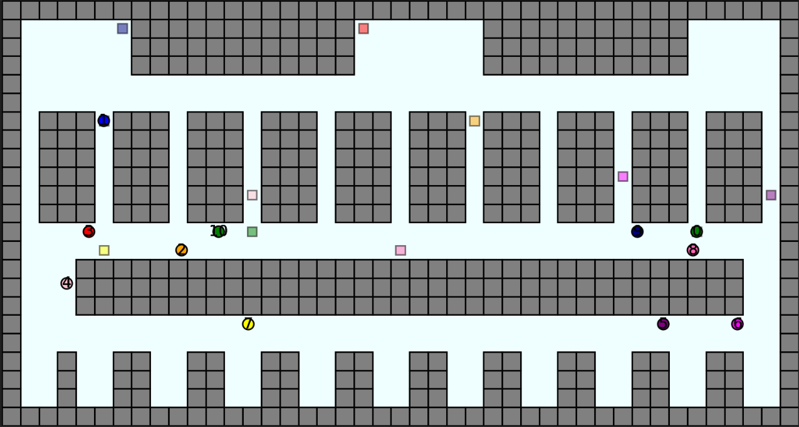

|
Saurabh Kashid I am an Autonomy Engineer with a strong background in developing and implementing advanced algorithms for robotics. Currently, I work at Joulea in Atlanta, where I focus on enhancing drone navigation through real-time LiDAR obstacle detection, state machine design for mission control and path planning. My expertise spans across sensor fusion, SLAM localization, and the integration of multiple SDKs to create efficient, real-world autonomous systems on. I hold a Master's in Robotics Engineering from Worcester Polytechnic Institute and a Bachelor's in Mechanical Engineering from Savitribai Phule Pune University. Throughout my career, I’ve tackled various projects, from implementing 6D pose Detection using Dense Fusion, machine unlearning techniques to designing trajectory controllers for drones and robots. Outside of work, I enjoy hiking, gymming, and playing various sports. These activities help me stay active and balanced while fueling my passion for exploring new challenges. |
{kind=link}
Work Experience |
|
|
Joulea, Atlanta, GAAutonomy Engineer (Full-time: Feb 2023 – Present | Co-op: Feb 2022 – Feb 2023)
|
Projects |

|
6D Pose Detection using Dense Fusion on Linemode Dataset
project page Applied state-of-the-art Dense fusion techniques on 6 classes out of 15 of linemode to get 6d pose of the object. |

|
Machine Unlearning with Selective Synaptic Damping (SSD)
project page Implemented SSD on ResNet-18 and Vision Transformer models for selective forgetting on CIFAR-10 and CIFAR-100 datasets. Achieved improved model accuracy after unlearning, demonstrating the effectiveness of SSD in mitigating the impact of specific training data. |

|
Quad-rotor Trajectory Tracking
project page Designed a Sliding mode controller to track the trajectory of a quadrotor. Generated quintic trajectories and tested the controller in the Gazebo environment.. |
|
|
RRbot Trajectory Control
project page Formulated RRbot’s dynamic equations using the Newton-Lagrange method and developed controllers to track cubic trajectories of unknown dynamics, tested in Gazebo. |
|
 |
Multi agent path finding for warehouse robot
project page Created a 2D warehouse environment in Python using Matplotlib and applied Conflict-Based Search with Space-Time A* for optimal pathfinding. Compared the performance of Priority-Based, Conflict-Based Search, and Conflict-Based Search with Disjoint strategies. |

|
Path Planning Algorithms
project page This project visualizes the DFS, BFS, Dijkstra, and A* pathfinding algorithms, showcasing their node exploration and shortest path discovery in a 2D grid with customizable obstacles. |
Education |
|
Master of Science, Robotics Engineering
Worcester Polytechnic Institute Jan 2022 – Dec 2023 |

Bachelor of Engineering, Mechanical Engineering
Savitribai Phule Pune University Aug 2017 – May 2020 |